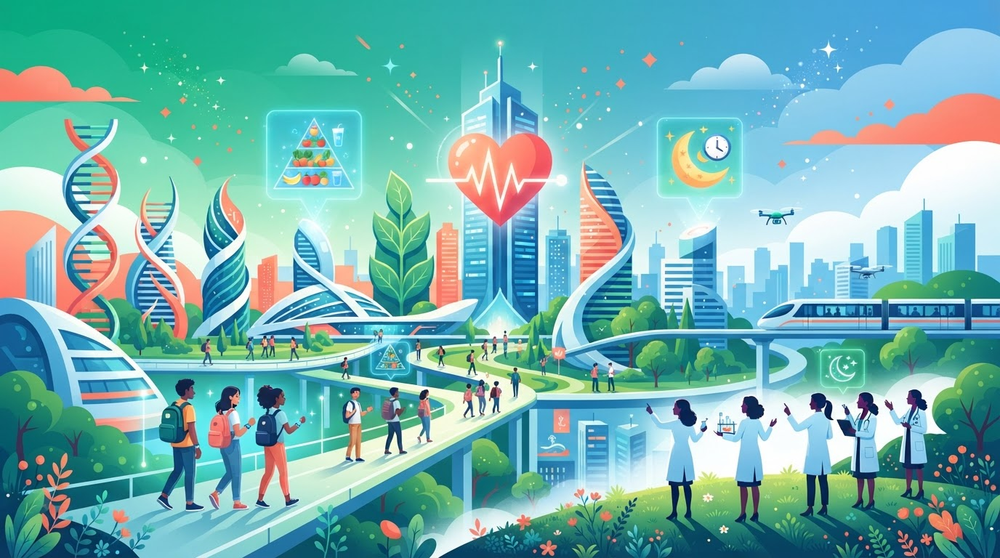

Agência Telessaúde
Jornada do Equilíbrio Bio-Sócio-Emocional
Jornada do Equilíbrio Bio-Sócio-Emocional
⭐ XP: 0
Streak: 0
🍎 Energia Nutric.20
🧠 Foco Neuro.20
💪 Vigor Físico20
Você foi recrutado como Agente de Saúde Digital. Em 8 missões, vai dominar alimentação balanceada (TBCA/USP), sono, saúde mental, movimento, dados epidemiológicos e imunidade — guiado por 6 cientistas brasileiras.

Recurso Educacional Aberto — qualquer escola pode utilizar; identifique-se para registrar sua jornada
Seis mulheres que transformaram a saúde e a ciência do Brasil
Preencha o nome, aceite o TCLE e escolha uma mentora para começar
O cofundador do #ECGNOW e médico cardiologista Dr. Gabriel de Paula explica sobre telessaúde nesse vídeo.
Ciclo de Palestras completo · videoteca curada · Cornell Notes com PDF
8 missões por Bio-Metrópole · badges · Vitalidade Tripla
Incluindo o raro Badge Ouro do Hackathon